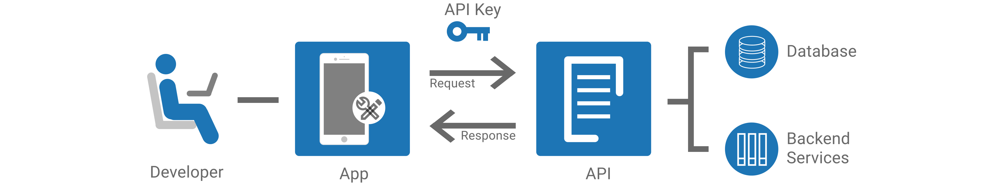
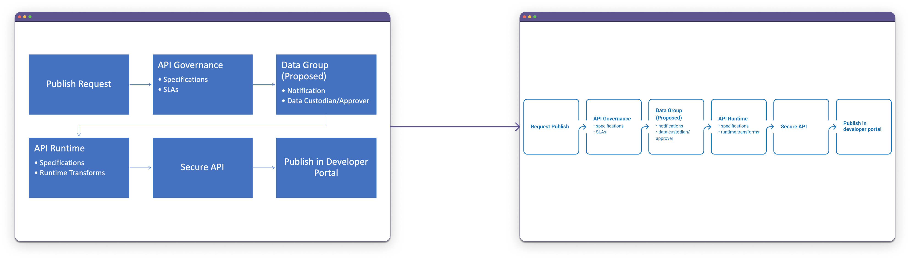
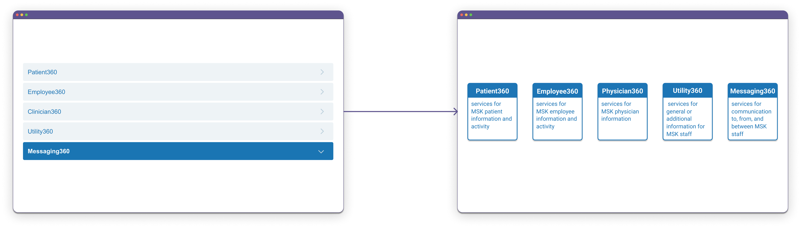

Table of contents
Context
Upon graduating, I joined the team I had interned with at MSKCC to help market their new API-governance initiative. They already had a few pages drafted in the intranet but wanted to update and polish the information before officially publishing the marketing site.
The Senior Manager didn’t give me much instruction on the specifics of what I needed to modify aside from the following:
- Remove explicit references to the external software product being used
- Include links to the forms for accessing and publishing APIs
- Include a list of existing APIs that developers in Information Systems had created
Existing Marketing Site
Upon reviewing the pages that were already drafted, I took mental note of how the existing content was organized and written.
Information Architecture
The existing content was broken down into 3 pages as follows:
- An overview of what APIs are and what the API@MSK Program is
- A description of what the 360 Initiative is within the API@MSK Program
- A visual representation of the processes for accessing and publishing APIs
Terminology & Tone
The existing copy used terminology and tone that assumed the audience understands and cares about how information is shared and managed in digital spaces.
In the drafted overview below, for instance, the bolded words may not be familiar to the average reader.
Application Programming Interfaces (APIs) provide a standardized way to share information assets across the web, mobile devices, service-oriented architecture (SOA), and the cloud. To ensure such information sharing is safe, reliable, and cost-effective, the API@MSK program is partnering with [redacted], named in multiple analyst reports as the industry leader in providing products that accelerate and enable the API lifecycle. By leveraging [redacted], the API@MSK Program centralizes and enables the management and use of APIs at MSK in a secure, high-performing, and easy-to-use manner.
Different Target Audiences: Room for Improvement
I came to the conclusion that the existing draft for marketing the API@MSK Program primarily targeted developers in MSK who want to use, create, and/or manage APIs. This was a problem, however, because the marketing site was to be published on the company-wide communications platform and thus will be viewable by both technical and non-technical audiences.
I met with the Senior Manager to confirm that the marketing site should inform not just developers at MSK about the API@MSK Program but anyone at MSK who might be interested in what the Information Systems Department was working on. He agreed that this could be an improvement to the existing draft for the marketing site, so I proceeded with this idea.
Editing Content
Information Architecture
Before modifying the actual content and copy to market the API@MSK Program, I planned out the updated information architecture I wanted.
Vaguely, I decided on creating pages for the following:
- An overview of what the API@MSK Program is
- An explanation for non-developers
- An explanation for developers
- A description of what the 360 Initiative is within the API@MSK Program
Content for API@MSK Landing Page
Because the page introducing the API@MSK Program is the landing page, I wanted the content to be understandable and relatable to a wide range of readers. In doing so, I thought that it would be helpful to keep a brief explanation of what APIs are but also explain how the API@MSK Program will be beneficial to MSKCC in the context of the healthcare industry.
Below is what I ended up publishing to the marketing site:
Companies in the healthcare industry are relying more and more on web and mobile applications to engage and connect with patients and partners, such as to deliver vital information or work with insurance companies and patient support services. Application Programming Interfaces, commonly referred to as APIs, power such applications by inspiring and helping developers efficiently create new and improve existing services to streamline operations and give patients higher quality of care.
The API@MSK Program is leveraging products from an industry leader to accelerate and enable the API lifecycle.
Through this initiative, the API@MSK Program will ensure that MSK's process for centralizing and enabling the management and use of APIs is secure, high-performing, transformative, and easy to manage.
In writing this, I also made sure to remove all explicit references to the external software product we were using, as requested by the Senior Manager.
Content for Non-Developers Page
Since I only provided a brief overview on APIs and the initiative in the landing page, I dedicated a separate page for the staff who are less tech-savvy to further elaborate on what APIs are and how they are useful.
I did some research online to see how other companies and websites described APIs and worked to paraphrase their explanations. I also looked up to see how I can visualize the concept and took the opportunity to practice creating my own illustrations in Figma.
After going into more detail on what APIs do, I created two more subheadings to directly relate APIs and the API@MSK Program to these MSK staff:
Why are APIs important (for MSK)?
APIs enable developers to easily create impactful programs.
For MSK specifically, APIs enable MSK developers to quickly and easily create programs that help MSK employees access and retrieve information necessary for their respective roles, whether they want to travel between campuses or pull up patient information from just an MRN.
Why is the API@MSK Program important for you?
The API@MSK Program allows MSK developers to easily manage and use existing APIs so that they can focus on what they do best in their work.
Currently, many developers are spending time contacting one another to see and access what APIs are available, rewriting programs that may serve similar purposes as others' programs, and making sure their works are secure and protected.
The API@MSK Program resolves these concerns by creating a centralized location where all APIs will live and adding security to the APIs for developers. In this way, developers can focus on building programs and applications that can facilitate the processes of and within MSK to achieve the overarching mission of Memorial Sloan Kettering.
Content for Developers Page
After creating a page for non-developers, I also wanted to dedicate a page to developers.
The actual content differed, though the ultimate goal remained the same.
Why is the API@MSK Program important for you?
The API@MSK Program allows you to focus on progressing your current project by doing what you do best.
Currently, many developers are spending time contacting one another to see and access what APIs are available, rewriting programs that may serve similar purposes as others' programs, and making sure their works are secure and protected.
The API@MSK program resolves these issues by letting you and other developers easily manage, find, and use APIs by centralizing API governance and security all in one place.
In this page, I also provided information about accessing and publishing APIs in MSK, including the links to the forms that the Senior Manager had required.

I also recreated the flowcharts that were in the original draft.
Content for 360 Initiative Page
The page explaining the 360 Initiative within the API@MSK Program existed in the original draft. I only made a few minor edits to the copy because I felt like it already accomplished its goal.
360 Categories
I did, however, create a graphic to break down the 5 categories within the 360 Initiative. This was because I didn’t want the definitions of each category to take up too much space on the page but I also didn’t want to use our accordion webpart as it would require additional clicks to view each definition.
List of APIs
Below the definitions, I also displayed the list of existing APIs according to the 5 different categories.

Curating this list was an ongoing process. The Senior Manager had given me a spreadsheet with some APIs and their listed points of contact, and I was responsible for reaching out to those developers to confirm and gather information about their APIs, including:
- Whether the API was PHI sensitive
- Whether the API was in development or published
- Whether the API can be accessed externally
- What the API would return
- Where the API definition file is located
It was challenging when some developers were no longer the correct contact or did not know what API I was referring to, proving the exact significance of this list and site.
Conclusion
I was really happy to join MSKCC again upon graduation and work on a writing project that I had quite some autonomy over. I especially enjoyed doing my own research, thinking about how to best organize and write the actual copy for a large audience to understand, and even recreating graphics in Figma to include in the webpages. Even though the project was less technical and more marketing than I had expected and was sunset after an API Team was established and the intranet was migrated to SharePoint Online, this was the first project I was assigned and owned upon graduating and thus will always be memorable to me.